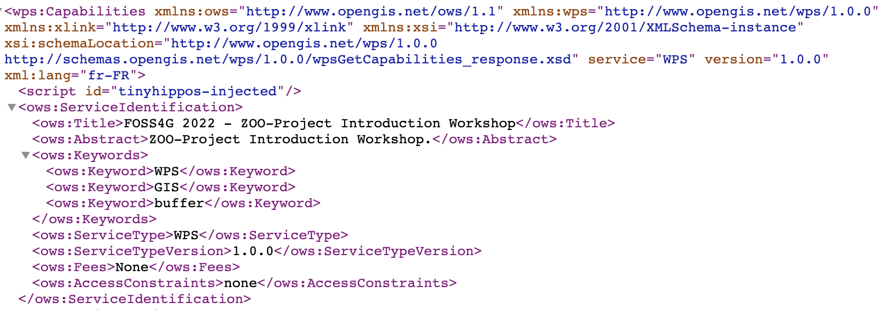
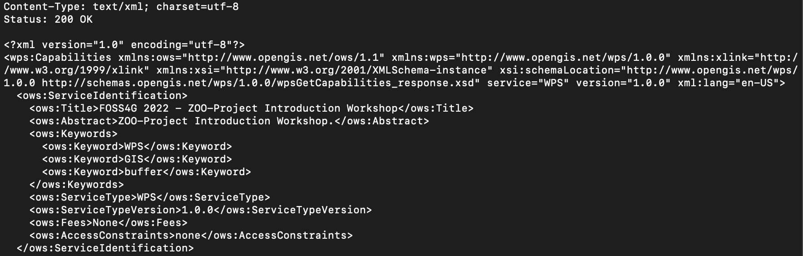

Installation, configuration and ZOO-Kernel use¶
ZOO-Kernel Installation¶
As said in introduction, you will use the official ZOO-Project Docker Compose evironment. To install the ZOO-Project on your local machine, use the following command.
git clone https://github.com/ZOO-Project/ZOO-Project.git
cd ZOO-Project
docker-compose up -d
For the specific purpose of the workshop, we will create new volumes
in the docker-compose.yml file for both zookernel and zoofpm
services. You should add the lines below after both -
./docker/com:/usr/com/zoo-project on line 21 and -
./docker/tmp:/tmp/zTmp on line 35.
- ./docker/ws2022:/usr/lib/cgi-bin/ws2022
- ./zoows2022/zoo-demo:/var/www/html/zoows-2022/
- ./zoows2022/data:/var/data
Once you saved the docker-compose.yml file, you are ready to run
the command below to first download the demonstration UI used during
the workshop and, restart Docker Compose.
curl -o zoows2022.tar.bz2 http://geolabs.fr/dl/zoows2022.tar.bz2
tar -xvf zoows2022.tar.bz2
docker-compose down && docker-compose up -d
Warning
the following ports should be available on the host where you run the previous command: 80, 5432, 8888, 15672 and 5672.
ZOO-Kernel Configuration¶
General ZOO-Kernel settings are set in the main.cfg file located in the same directory as the ZOO-Kernel, so in /usr/lib/cgi-bin/. This informations will be accessible from each services at runtime, so when you wil use Execute requests. You can see a typical main.cfg content in the following:
Note
we will use ZOO-Kernel or zoo_loader.cgi script without any distinction
in this document.
1[main]
2encoding = utf-8
3version = 1.0.0
4serverAddress = http://localhost/cgi-bin/zoo_loader.cgi
5language = en-US
6lang = fr-FR,en-CA,en-US
7tmpPath=/tmp/zTmp/
8tmpUrl = http://localhost/temp/
9dataPath = /usr/com/zoo-project
10cacheDir = /tmp/zTmp/
11templatesPath = /var/www/
12mapserverAddress = http://localhost/cgi-bin/mapserv
13msOgcVersion=1.0.0
14cors=true
15memory=load
16
17[identification]
18title = The ZOO-Project OGC WPS Developement Server
19abstract = Developement version of ZOO-Project OGC WPS. See http://www.zoo-project.org
20fees = None
21accessConstraints = none
22keywords = WPS,GIS,buffer
23
24[provider]
25providerName=ZOO-Project
26providerSite=http://www.zoo-project.org
27individualName=Gerald FENOY
28positionName=Developer
29role=Dev
30addressDeliveryPoint=1280, avenue des Platanes
31addressCity=Lattes
32addressAdministrativeArea=False
33addressPostalCode=34970
34addressCountry=fr
35addressElectronicMailAddress=gerald.fenoy@geolabs.fr
36phoneVoice=False
37phoneFacsimile=False
The main.cfg file contains metadata informations about the identification and provider but also some important settings. The file is composed of various sections, namely [main], [identification] and [provider] per default.
- From the
[main]section, settings are as follow: lang: the supported languages separated by a coma (the first is the default one),version: the supported WPS version,encoding: the default encoding of WPS Responses,serverAddress: the url to access your ZOO-Kernel instance,dataPath: the path to store data files (when MapServer support was activated, this directory is used to store mapfiles and data).tmpPath: the path to store temporary files (such as ExecuteResponse when storeExecuteResponse was set to true),tmpUrl: a url relative toserverAddressto access the temporary file,cacheDir: the path to store cached request files [1] (optional),mapservAddress: your local MapServer address (optional),msOgcVersion: the version for all supported OGC Web Services output [2] (optional),cors: accept cross reference,memory: this parameter define how the ZOO-Kernel will handle the inputs (set toloadin case you want everything to be loaded in memory and ensure to get avaluefield set ).
Warning
Please make sure that memory is set to load for
the JavaScript services you will create in the last section.
The [identification] and [provider] section are specific to OGC metadata and
should be set [3].
Obviously, you are free to add new sections to this file if you need
more [4]. Nevertheless, you have to know
that there is some specific names you should use only for specific
purposes: [headers], [mapserver], [env], [lenv], [renv] and [senv].
Warning
[senv], [renv] and [lenv] are used / produced
on runtime internaly by the ZOO-Kernel and should be
accessed / defined only from the Service code.
The headers section is used to define your own HTTP Response
headers. You may take a look at headers returned by web site such as
http://www.zoo-project.org by using curl command line tool for
instance and notice the specific heder X-Powered-By: Zoo-Project@Trac.
Warning
There is no reason to define basic headers such as
Content-Type or encoding as they will be overwritten at runtime by the
ZOO-Kernel.
The mapserver section is used to store specific mapserver configuration
parameters such as PROJ_LIB and GDAL_DATA or any other you want to be set to
make your MapServer working.
Note
the mapserver section is mainly used on WIN32 platform
The env section is used to store specific environment variables you want to be set
prior to load your Services Provider and run your Service. A typical example, is when your
Service requires to access to a X server running on framebuffer, then you will have to
set the DISPLAY environnement variable, in this case you would add
DISPLAY=:1 line in your [env] section.
The lenv is used to store runtime informations automatically set by the
ZOO-Kernel before running your service and can be accesses / updated from it:
sid(r): the service unique identifier,
status(rw): the current progress value (value between 0 and 100, percent),
cwd(r): the current working directory of the ZOO-Kernel,
message(rw): an error message when returningSERVICE_FAILED(optional),
cookie(rw): the cookie your service want to return to the client (for authentication purpose or tracking).
The senv is used to store session informations on the server
side. You can then access them automatically from service if the
server is requested using a valid cookie (as defined in lenv >
cookie). The ZOO-Kernel will store on disk the values set in the
senv maps, then load it and dynamically add its content to the one
available in the main.cfg. The senv section should contain at
least:
XXX: the session unique identifier whereXXXis the name included in thereturned cookie.
conf["lenv"]["cookie"]="XXX=XXX1000000; path=/"
conf["senv"]={"XXX": "XXX1000000","login": "demoUser"}
That means that the ZOO-Kernel will create a file sess_XXX1000000.cfg in the
cacheDir and return the specified cookie to the client. Each time the client will
request the ZOO-Kernel using the Cookie, it will automatically load the value stored
before running your service. You can then easilly access this informations from your
service source code. This functionality won’t be used in the following presentation.
Testing the ZOO installation with GetCapabilities¶
Once you have a main.cfg file available in the same directory as your ZOO-Kernel, then you can use GetCapablities. Indeed, to answer such kind of requests, the ZOO-Kernel will simply parse the main.cfg file (to gather global informations), then parse individually each zcfg files (if any) contained in the same directory or in sub-directories [6], then return a well formed Capabilities document.
You can request ZOO-Kernel using the following link from your Internet browser:
http://localhost/cgi-bin/zoo_loader.cgi?Request=GetCapabilities&Service=WPS
You should get a valid Capabilities XML document, looking like the following :
{kind=link}
Please note that some Process nodes are returned in the ProcessOfferings section, as somes are available already on OSGeoLive DVD. You can also run a GetCapabilities request from the command line, using the following command:
docker exec -it zoo-project_zookernel_1 bash
cd /usr/lib/cgi-bin
./zoo_loader.cgi "request=GetCapabilities&service=WPS" | more
The same result as in your browser will be returned, as shown in the following screenshot:
{kind=link}
Invoking the ZOO-Kernel from the command line can be helpful during
development process of new Services for debugging purpose. If you
need to simulate POST request from the command line, then you can use
the following commands from the zoo-project_zookernel_1 container.
cd /usr/lib/cgi-bin
# Download the sample GetCapabilities request
curl -o /tmp/10_wpsGetCapabilities_request.xml http://schemas.opengis.net/wps/1.0.0/examples/10_wpsGetCapabilities_request.xml
# Define required environment settings
export REQUEST_METHOD=POST
export CONTENT_TYPE=text/xml
# Run the request downloaded
./zoo_loader.cgi < /tmp/10_wpsGetCapabilities_request.xml | more
You should have the same result as presented before.
Footnotes